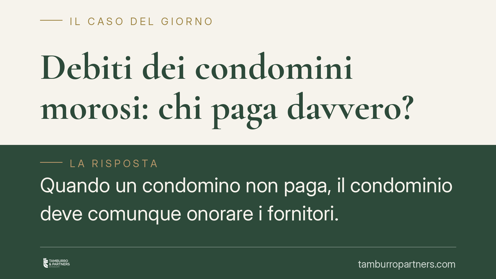

Debiti dei condomini morosi: chi paga davvero?
Quando un condomino non paga, il condominio deve comunque onorare i fornitori. Da qui la domanda ricorrente: i condomini in regola possono essere costretti a sobbarcarsi il debito altrui? La risposta distingue tra anticipazione temporanea e recuperabile, legittima, e accollo definitivo del debito del moroso, che incontra limiti precisi. Vediamo il quadro normativo e cosa fare in concreto.

Il problema: morosità e continuità dei servizi
Il condominio è tenuto a pagare fornitori e utenze anche quando uno o più condomini non versano le quote. L'amministratore deve garantire la continuità dei servizi comuni: riscaldamento, energia, pulizie, manutenzioni. La cassa, però, si alimenta con i contributi di tutti. Se qualcuno non paga, si crea un buco da coprire.
La soluzione pratica più diffusa è il fondo di anticipazione: i condomini in regola versano somme aggiuntive per tamponare temporaneamente la mancanza di liquidità. È uno strumento ben diverso dall'accollo definitivo del debito del moroso. La distinzione non è formale: cambia radicalmente la legittimità della delibera.
Inquadramento normativo
L'obbligazione dei condomini verso i fornitori è di regola parziaria, non solidale: ciascuno risponde in proporzione alla propria quota millesimale. Lo hanno chiarito le Sezioni Unite della Cassazione con la sentenza n. 9148 del 2008, principio oggi da leggere in combinato con l'art. 63 disp. att. c.c., come riformato dalla legge n. 220/2012.
L'art. 63, comma 2, delle disposizioni di attuazione del codice civile introduce il cosiddetto *beneficium excussionis* a favore dei condomini in regola: il creditore del condominio può agire contro i condomini virtuosi solo dopo aver escusso i condomini morosi. A tal fine l'amministratore è tenuto a comunicare ai creditori che lo richiedano i dati dei morosi. In altri termini, il fornitore deve prima tentare il recupero verso chi non ha pagato, sulla base dell'elenco fornito dall'amministratore, e solo in via sussidiaria può rivolgersi agli altri.
Anticipazione recuperabile vs accollo forzato
Il punto centrale è questo. L'assemblea può deliberare, a maggioranza, che i condomini anticipino le somme necessarie a coprire la morosità: si tratta di un esborso temporaneo e recuperabile, perché il condominio conserva il credito verso il moroso e deve attivarsi per riscuoterlo (decreto ingiuntivo ex art. 63, comma 1, disp. att. c.c., immediatamente esecutivo).
Diverso è il caso in cui l'assemblea decida di accollare in via definitiva ai condomini in regola il debito del moroso, cancellando ogni azione di recupero e ripartendo la perdita sugli altri. Una simile delibera incide su diritti individuali e dispone di un patrimonio altrui: secondo l'orientamento prevalente è nulla per impossibilità o illiceità dell'oggetto, non semplicemente annullabile.
La differenza ha conseguenze processuali decisive. La delibera annullabile (vizi procedurali o di convocazione) va impugnata entro il termine di decadenza dell'art. 1137 c.c.: trenta giorni, che decorrono dalla data della deliberazione per i condomini dissenzienti o astenuti presenti, e dalla comunicazione del verbale per gli assenti. La delibera nulla, invece, è impugnabile senza limiti di tempo da chiunque vi abbia interesse. Confondere i due piani espone a errori gravi: chi lascia scadere i trenta giorni credendo di poter sempre contestare un accollo, o chi rinuncia all'impugnazione di una nullità ritenendola tardiva.
Lo stralcio del credito inesigibile
Quando il credito verso il moroso diventa concretamente irrecuperabile — ad esempio per incapienza accertata dopo esecuzione infruttuosa — l'assemblea può deliberare lo stralcio contabile della posta. È un'operazione di pulizia del bilancio che registra una perdita già maturata, non un modo per trasferire a monte l'onere sui virtuosi.
La differenza è di nuovo sostanziale: lo stralcio presuppone che il recupero sia stato tentato e documentato come impossibile. Senza questa istruttoria, la ripartizione della perdita rischia di trasformarsi in un accollo mascherato, con i profili di nullità già visti.
Implicazioni pratiche
Per il condomino in regola: non siete automaticamente obbligati a coprire il debito altrui, ma potete essere chiamati ad anticipare somme recuperabili e, in via sussidiaria, a rispondere verso il creditore dopo l'escussione del moroso. Vigilate sul contenuto delle delibere.
Per l'amministratore: l'inerzia nel recupero espone a responsabilità. Il decreto ingiuntivo ex art. 63 è lo strumento d'elezione e la documentazione dei tentativi è imprescindibile per un eventuale stralcio.
Cosa fare in concreto
- Leggete il verbale prima di approvarlo: distinguete se si delibera un'anticipazione recuperabile o un accollo definitivo del debito del moroso.
- Impugnate nei termini le delibere annullabili: trenta giorni ex art. 1137 c.c., dalla deliberazione se eravate presenti e dissenzienti/astenuti, dalla comunicazione del verbale se assenti.
- Non rinunciate a contestare un accollo definitivo ritenendolo tardivo: la nullità è deducibile senza limiti di tempo.
- Pretendete l'attivazione del recupero: chiedete all'amministratore prova del decreto ingiuntivo e delle azioni esecutive verso il moroso.
- Documentate l'inesigibilità prima di approvare qualunque stralcio: senza istruttoria sul recupero, la perdita non è legittimamente ripartibile.
Disclaimer
Contributo informativo a cura di Tamburro & Partners - Avv. Giuseppe Tamburro. Non costituisce parere legale.
Ogni condominio ha una storia a sé.
Se gestisci un'amministrazione e vuoi un confronto su una specifica questione condominiale, scrivi allo studio. Ti rispondiamo entro un giorno lavorativo.